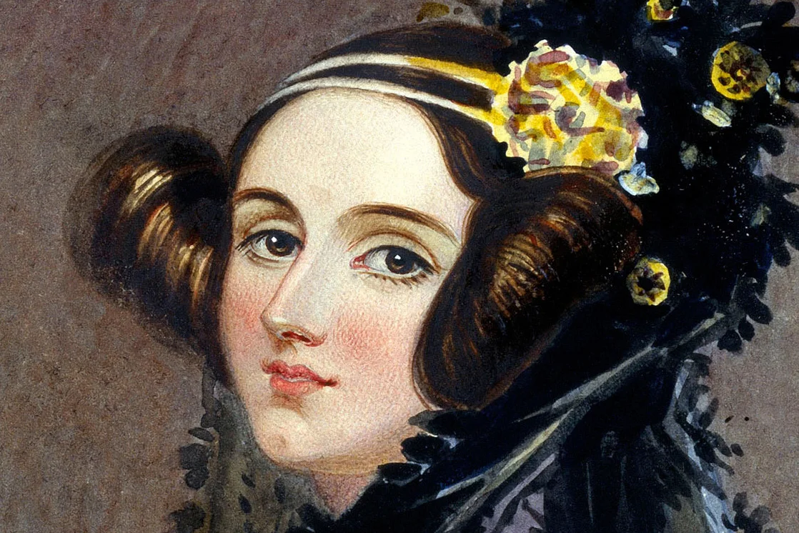
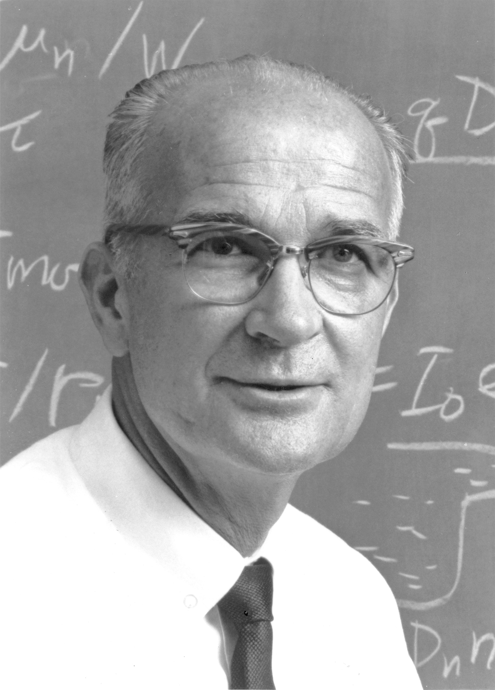

Hall of Fame van IT
-
Steve Wozniak en Steve Jobs
Als medeoprichters van Apple Inc. hebben ze de computerindustrie getransformeerd met innovatieve producten zoals de Apple I, Apple II en later de iPhone en iPad.
-

Ada Lovelace
Ze wordt beschouwd als de eerste computerprogrammeur vanwege haar werk aan de Analytical Engine van Charles Babbage en haar baanbrekende inzichten in de mogelijkheden van computers.
-
 Larry Page en Sergey Brin
Larry Page en Sergey Brin
Als medeoprichters van Google hebben ze 's werelds meest gebruikte zoekmachine gecreëerd en hebben ze bijgedragen aan de ontwikkeling van vele andere technologische producten en diensten.
-
Charles Babbage
Hij wordt beschouwd als de "vader van de computer" vanwege zijn ontwerpen voor de mechanische computers, waaronder de Analytical Engine, die een voorloper was van moderne computers.
-

William Shockley
Als mede-uitvinder van de transistor legde hij de basis voor moderne elektronica en speelde een cruciale rol in de ontwikkeling van de halfgeleiderindustrie.
-
Grace Hopper
Ze was een pionier op het gebied van computerwetenschappen en wordt vaak gecrediteerd voor het bedenken van de eerste compiler voor een programmeertaal, waardoor programmeurs gemakkelijker software konden schrijven.
-
Linus Torvalds
Als de bedenker van het Linux-besturingssysteem heeft hij een enorm impact gehad op de wereld van open-source software en heeft hij bijgedragen aan de popularisering van het idee van samenwerking en gemeenschapsontwikkeling.
-
_(cropped).jpg) Mark Zuckerberg
Mark Zuckerberg
Als mede-oprichter van Facebook heeft hij een van de meest invloedrijke socialemediaplatforms gecreëerd en heeft hij een revolutie teweeggebracht in de manier waarop mensen wereldwijd communiceren en informatie delen.
-
 Bill Gates
Bill Gates
Als mede-oprichter van Microsoft heeft hij een enorme invloed gehad op de computerindustrie en de wereldwijde verspreiding van pc's door het Windows-besturingssysteem en andere softwareproducten.
-
 Gordon Moore
Gordon Moore
Hij is vooral bekend om zijn observatie dat het aantal transistors op een microchip ongeveer elke twee jaar verdubbelt, bekend als de "wet van Moore", die de groei en vooruitgang van de halfgeleiderindustrie heeft geleid.
-
Chad Hurley, Steve Chen en Jawed Karim
Als medeoprichters van YouTube hebben ze een platform gecreëerd dat de manier waarop mensen video's online bekijken en delen heeft veranderd en heeft bijgedragen aan de opkomst van online videocontent.
-
Kevin Mitnick
Hij wordt beschouwd als een van de beruchtste hackers en beveiligingsexperts ter wereld en heeft bijgedragen aan het vergroten van het bewustzijn over cybersecurity en de noodzaak van betere beveiligingspraktijken.
-
Rich Skrenta
Hij wordt erkend als de maker van het eerste computervirus dat zich verspreidde via een besturingssysteem, wat heeft bijgedragen aan het bewustzijn van de noodzaak van antivirussoftware en beveiligingsmaatregelen.